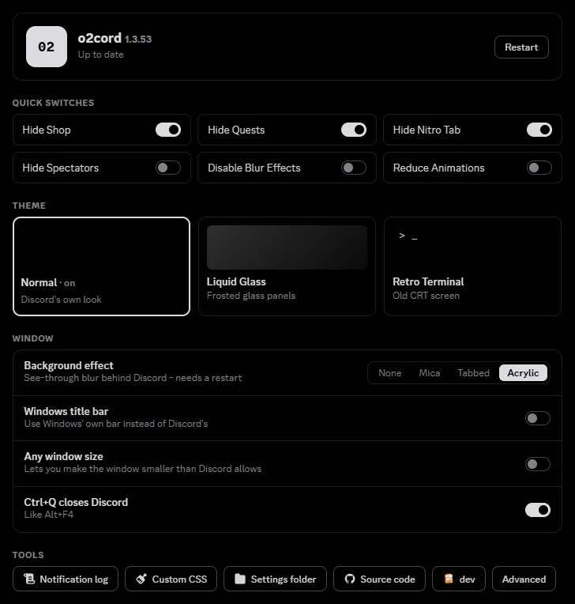
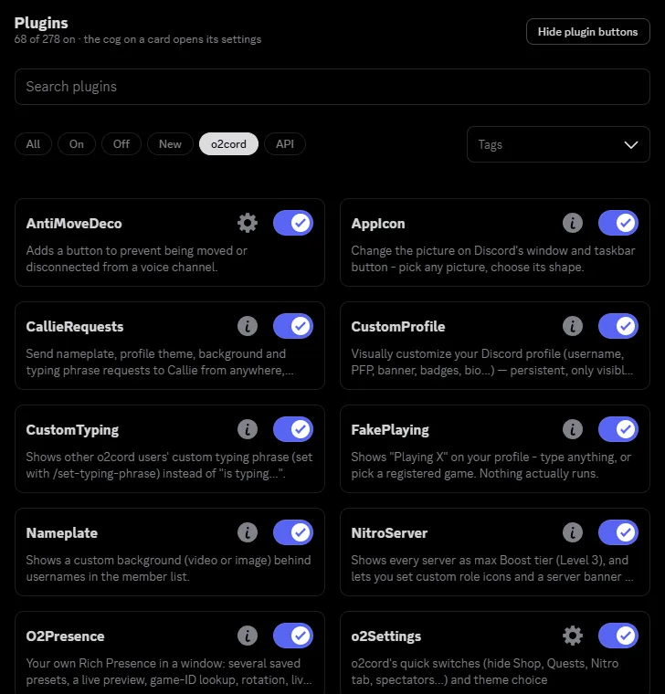

Discord, your way.
o2cord is a free client mod for Discord on Windows. Pick a theme, dress up your profile, turn Discord into an old terminal screen, and switch off the parts you don't want.

What you get
Simple switches for everyday things, and plenty more when you want it.
Retro Terminal
Turn Discord into an old CRT screen: phosphor colours, glow, scanlines, a boot screen. Double-click the card to tune it.
Your profile
Custom profile, profile themes, nameplates, a typing phrase and profile songs - and you can see other people's too.
Quick switches
Hide the Shop, Quests and Nitro tab, hide the spectators list, cut blur and animations - one click each.
Voice and streaming
AntiMoveDeco puts you back in your voice channel if someone moves or disconnects you. A picture for your stream panel too.
Rich presence
Your own status window with saved presets, a live preview and your own pictures and buttons.
Plugins and themes
Hundreds of plugins and your own CSS themes, with search and a one-click on/off for each.
Simple on purpose
One clean page for the things you change most. Filter plugins with a click, find your themes straight away, and keep a backup of your settings.

Install in a minute
You don't need to know anything technical.
- Download the installer with the button above.
- Close Discord, then open the file you downloaded.
- Choose your Discord (Stable, PTB or Canary) and press Install.
- Open Discord, go to Settings and find the o2cord section.
Windows may show a blue "Windows protected your PC" box because the installer isn't code-signed. Press More info, then Run anyway. o2cord updates itself after that.
Questions
Is it free?
Yes.
Can I check what it does?
The source code is public on GitHub, so you can read it yourself.
How do I remove it?
Run the installer again and choose Uninstall.
Is this allowed by Discord?
Client mods go against Discord's Terms of Service, so use o2cord at your own risk. We're not affiliated with Discord.
Something broke - where do I ask?
Join the Discord server and tell us what happened.